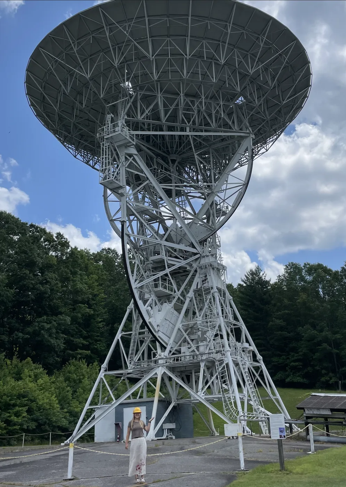
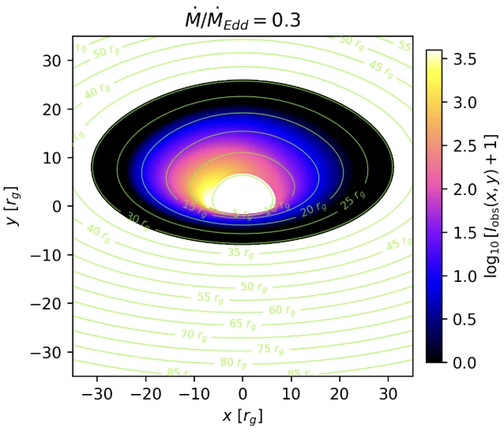
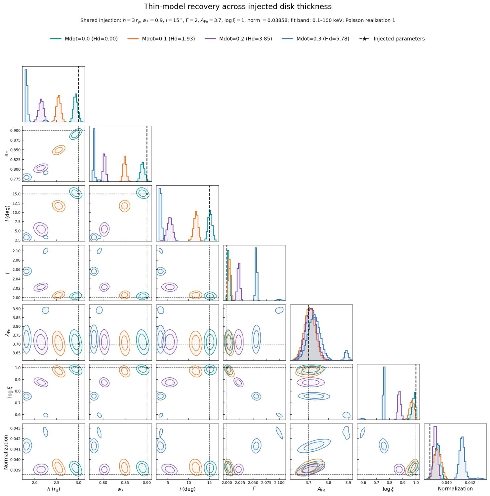
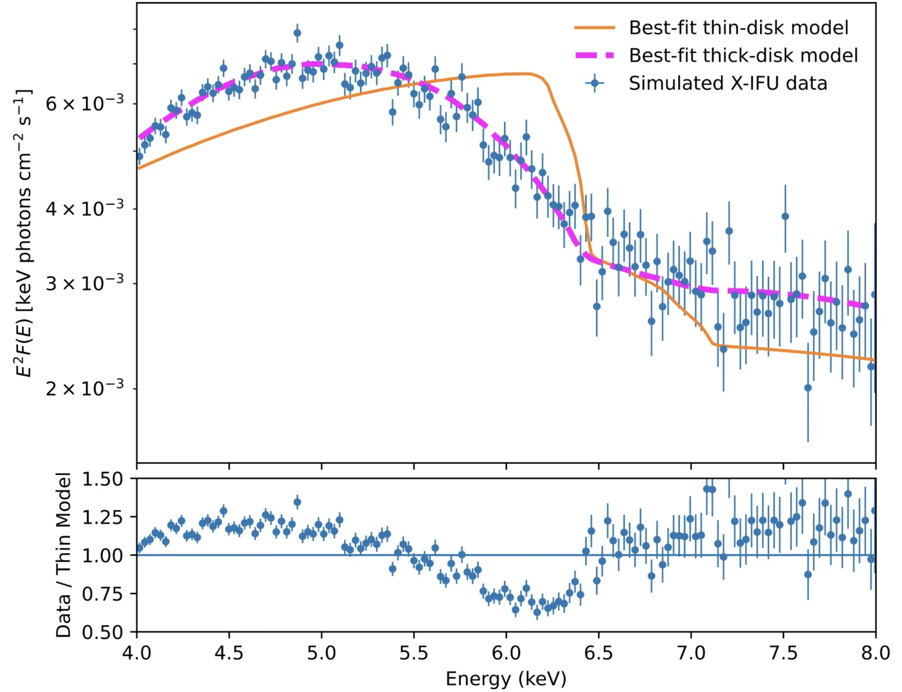
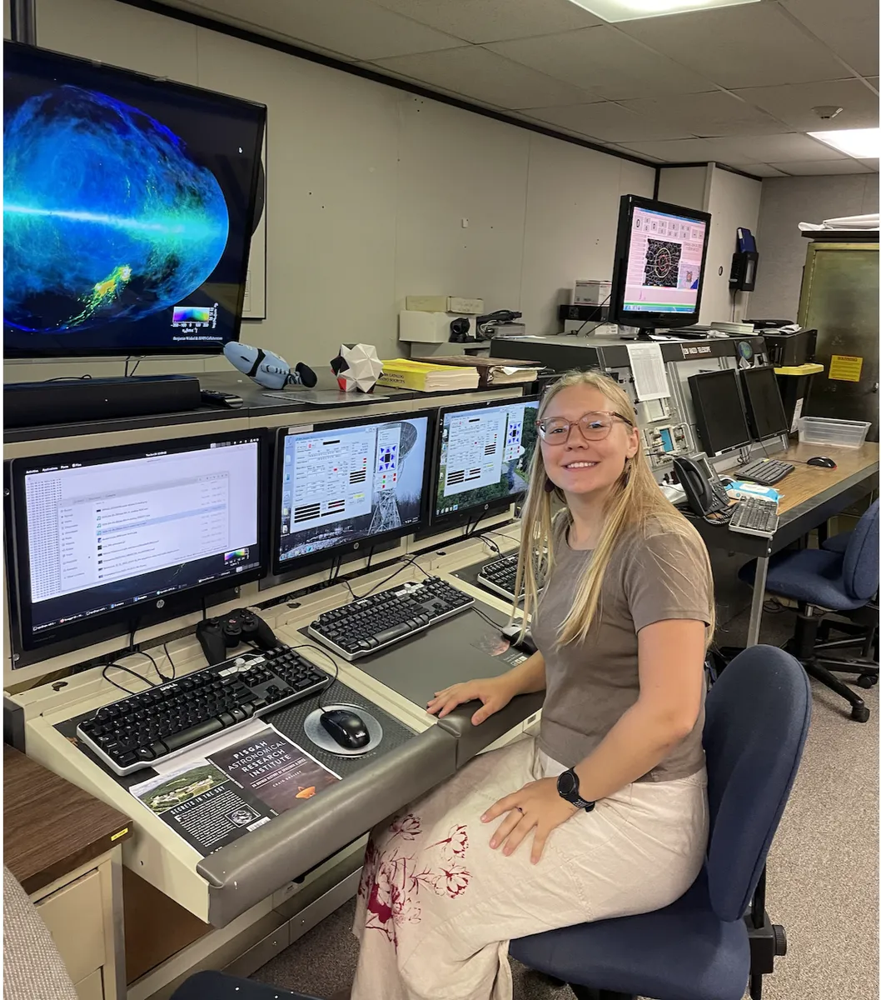
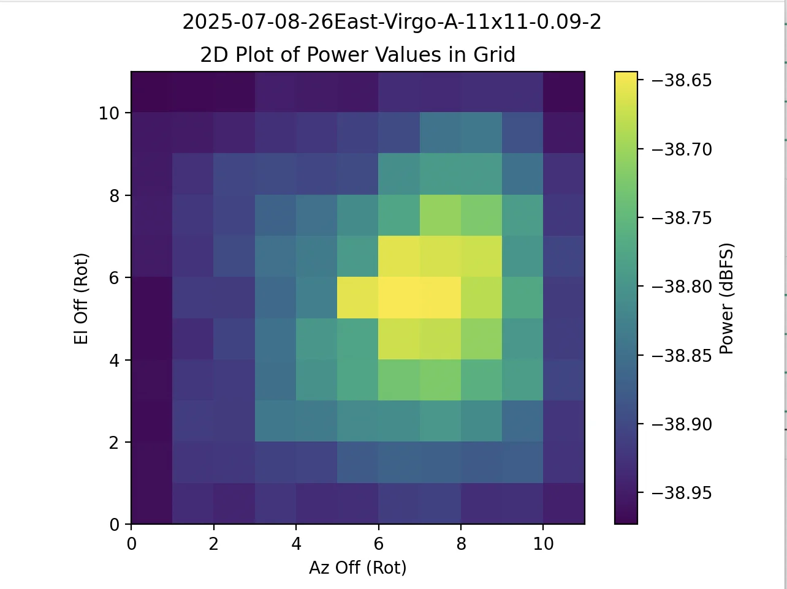
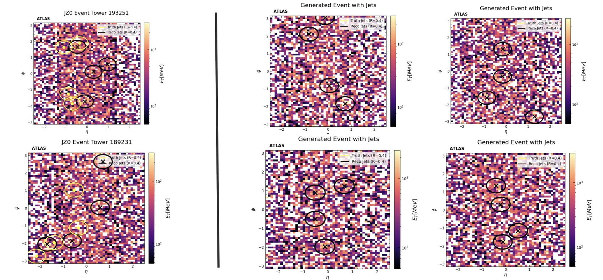
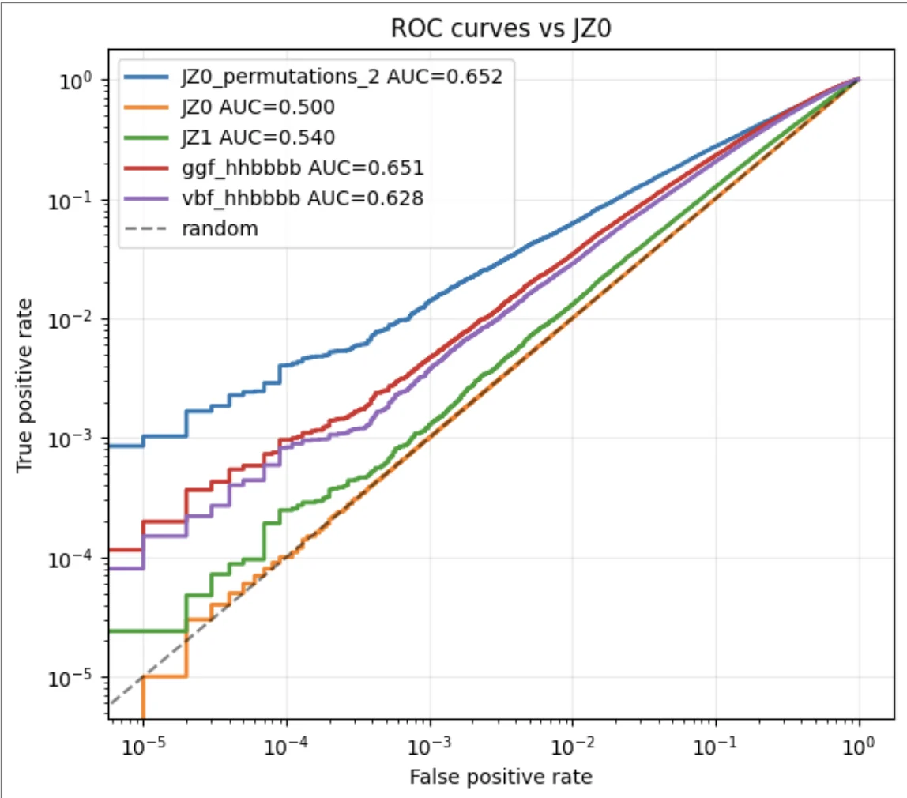

Extreme mass-ratio inspirals
I wrote Python tools to evolve orbital parameters and compare waveforms using post-Newtonian equations and the Black Hole Perturbation Toolkit.
Wake Forest · Fall 2025Hi, I’m Isabelle.
I’m a physics and math student at Wake Forest. Right now I’m studying how a black hole’s accretion disk changes the X-rays we see. I also like being close to the instruments: at PARI, I wrote software to scan radio sources with a 26-meter dish.
Most of my projects have taken me between the physics, the code, and the measurement.
Wake Forest University · Physics with Honors, Mathematics, Computer Science · Class of 2027

WHAT I’M WORKING ON NOW
Many models of X-ray reflection assume the accretion disk is paper-thin. At higher accretion rates, the disk can puff up. Its inner wall can block the corona’s light from reaching the outer disk, and the near side can hide part of the inner edge from us.
My project asks a practical question: if the real disk is thick, what happens when we fit its spectrum with a thin-disk model?

HOW I TEST IT
I use FENRIR, a general-relativistic ray-tracing framework, to follow photons from a lamp-post corona down to the disk and then from the disk to a distant observer. Those calculations give me the disk’s illumination profile and the relativistic energy shifts that shape the reflection spectrum.
I combine those outputs with local reflection spectra and fit the resulting data in XSPEC. A lot of my work has gone into understanding FENRIR and building an independently checked local model that I can use in the fitting pipeline. For individual cases I explore the parameter posterior with MCMC. Across larger grids, I fit repeated Poisson realizations with C-statistic minimization and multiple starting points.
In the models I’ve tested, the thin-disk fits often recover lower spin, inclination, and coronal height as the injected disk gets thicker. The size and even the direction of the effect depend on geometry, so I’m mapping it case by case.

WHAT THE FITS ARE TELLING ME
That is the tricky case: the model may match the data well enough while returning a biased spin or viewing angle. In other geometries, the thin model leaves structured residuals or pushes a parameter against a fit boundary. Those cases make the mismatch easier to spot.
I’m also testing whether future high-resolution instruments could distinguish the two geometries. In one 50 ks Athena X-IFU simulation, the thick-disk model follows the mock spectrum around the Fe-K line while the thin-disk fit leaves a clear residual pattern.

This work is with Dr. Alejandro Cárdenas-Avendaño at Wake Forest, with collaborators Dr. Javier García and Dr. Joanna Piotrowska-Karpov. A manuscript is in preparation.
A PROJECT THAT STARTED AT THE TELESCOPE
Pisgah Astronomical Research Institute · Summer 2025
PARI’s 26-meter dishes are old, powerful instruments with several software layers between a person and the telescope. I wrote programs that could send a telescope through a grid of positions around a radio source, log the measurements, and turn them into a map.
I started with SDRAngel’s API, then built a second route that communicated more directly with the telescope’s DFM control software. That pivot came from watching the first version move: it could overshoot when it changed direction, and gear backlash made the pointing less consistent than I wanted.


The SDRAngel program supports serpentine, spherical, and daisy scan patterns, and lets the operator choose the grid size, spacing, and coordinate system. A typical S-band grid used 0.09° spacing. A scan took about five minutes, which made it practical for students and guests to use.
The DFM version sent commands more directly through a Python socket connection. It took closer to 30 minutes per scan, and I only had time to test it twice, so those results were preliminary. The first version produced more scans, but the offsets did not show a clear pattern that would support a pointing model. The likely culprit was mechanical backlash, especially when the software reversed direction.
One of my favorite moments came later, when high-school campers used the SDRAngel code to find evidence of a pulsar and analyze its intensity. I got to show them the radio data and help them work through what they were seeing.
A DIFFERENT KIND OF SIGNAL
University of Geneva & CERN · Spring 2026
During my semester in Geneva, I worked with Dr. Ioannis Xiotidis on a machine-learning question for high-energy physics: can a normalizing flow learn the background patterns in calorimeter data well enough to flag unusual events?
The data look like six stacked detector images. Each event has 19,200 cells, and most cells are empty. I built a rational-quadratic spline flow with a U-Net conditioner, then compared generated samples and likelihood-based anomaly scores against background and simulated di-Higgs events.


The surprise was how much the empty cells mattered. Depending on the detector layer, 95–99.7% of the electromagnetic calorimeter cells contained no energy. A little noise added during preprocessing made the data continuous enough for the flow, but the event-level likelihood then paid attention to thousands of noisy cells for every localized shower.
So the model could reproduce broad energy distributions while its anomaly score was mostly measuring occupancy and preprocessing noise. The lesson I took away was that generation quality and anomaly-detection quality are different questions. A more useful model may need to learn where energy appears separately from how much energy each active cell carries.
OTHER QUESTIONS I’VE WORKED ON
I wrote Python tools to evolve orbital parameters and compare waveforms using post-Newtonian equations and the Black Hole Perturbation Toolkit.
Wake Forest · Fall 2025I used Julia to solve the TOV equations, reconstruct rotating-star models, and plot their mass–radius relationships.
Wake Forest · Spring 2025OUTSIDE THE CODE
At PARI, I got to be both a researcher and a camp counselor. Seeing students take control of a radio telescope for the first time made me want to keep creating those moments. At Wake Forest, I tutor physics, lead whitewater kayaking and stargazing trips through Outdoor Pursuits, and serve as president of the Society of Physics Students.
When I’m away from the lab, I’m usually outside, running, or looking for a good excuse to get people out under the stars.